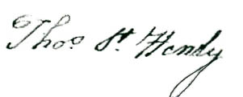

The Will of Thomas Smoot ~ 1783
(Prince William County Virginia, Will Book G, page 238)
Transcription contributed by Dennis M. Smoot
Annotations by Dennis M. Smoot & Fred Smoot
(See Page 64,
The Smoots of Maryland and Virginia)
Thomas Smoot’s Will |
In the name of God, Amen I Thomas Smoot of the County of Prince William
in the Commonwealth of Virginia being sick and weak in body tho’
of sound sense and memory (God be praised) do make and ordain this my
last will and testament as followeth. First and most principally I
give and bequeath my soul to God (who gave it first to me) in hopes of
a pardon of all my sins and his gracious acceptance, thru the only merit
of my Savior Jesus Christ. My body I commend to the earth to be decently
buried at the discretion of my executor hereafter named in expectation
of a happy resurrection and reunion with my soul at the Last Day, and
what worldly goods God has been pleased to bestow on me, I give and
bequeath after my just debts and funeral expenses are paid in the
following manner.
Item. I give and bequeath to my son Notly Smoot a young roan mare,
saddle and bridle now in his possession.
Item. I give and bequeath to my son William Mattox Smoot a bay horse, saddle
and bridle now in his possession.
Item. I give and bequeath to my son Thos S t Henley
Smoot † a black horse colt, saddle and bridle now in his possession, and if
he should die before
he is fit for service, then I give him another horse of equal value with Notley’s and Wm
Mattox’s.
Item. I give and bequeath to my daughter Mary Ballenger five shillings cash, she having already
received a sufficient proportion of my estate.
Item. I give and bequeath to my loving wife Elizabeth all my Negroes and stocks of all kinds and
all the residue and remainder of my estate of what nature soever during her widowhood, and at her
marriage or death I give and bequeath the said Negroes, stocks and all other my said estate to be
equally divided between my sons Henry Smoot, George Mattox Smoot, James Mattox Smoot and the child
that my said wife is now pregnant with, and to their heirs forever, but in case any of the said
Henry, George Mattox, James Mattox or unborn child shall die before they be possessed of the
estate hereby intended, that the same be equally divided between the survivors of my said four
children last mentioned. But if it shall so happen at the marriage or death of my said wife
that my Negroes should have increased so that their should be one for each of all my before
mentioned children except Mary Ballenger, then in that case my will and desire is that my said
sons Notly, Wm Mattox and Thos
St Henly
have each of them out of the increase of the said
Negroes one young Negro and no more, Notly to have first choice, Wm Mattox next and
Thos St Henly last. And lastly I hereby nominate
and appoint my loving wife Executrix of this my last will and testament during her widowhood
reposing the care and tuition of my children to her, but in case my said wife shall marry,
I appoint my sons Notly and Wm Mattox
Executors in her stead, and my will is that my said
executrix shall not give security and may remove to any place or state she shall choose,
and that my estate be not appraised, and that my right and possession of Bristoe’s
Land‡
be sold and the money laid out for the benefit of my estate. In witness whereof I hereunto set
my hand and seal this 20th of May 1783.
Thomas Smoot
Signed and Published in presence of
Ja Ewell
Geo Samkin
Presley Petty
James Brown
William Petty
At a court held for Prince W County the 7th day of
July 1783 This last Will and Testament of Thomas Smoot dec’d
was presented in court
by Elizabeth Smoot the widow and Executrix in the said will named being proved by the oath of
James Ewell Gent was ordered to be recorded, the said Executrix took the usual oaths and gave bond.
Test
Robt Graham Cl
Court
Notes:
† Thos St
Henly [Henley]
Smoot

It is generally accepted that the “St”
abbreviation (with the superscript t ) stands for Saint
although Stewart, Stuart, and perhaps other names are possible.
We have not been able to find a Saint Henly (Henley) in lists of saints.
Fred Smoot
‡ Bristoe’s Land
Bristoe’s Land was a large tract of land in Prince William County formerly owned by
Robert Bristoe, who leased it out to tenants in exchange for rental payments of tobacco.
In 1779, Bristoe was adjudged to be an enemy alien, and his land was confiscated by the
State of Virginia, which thereafter administered the land and collected the tobacco
lease payments.
Also see: The
Bristoe Tract -- Rent Rolls, Map and History (PDF
file)
at Bull Run Regional Library, Manassas, Virginia
Sources:
Entry 660, Auditor of Public Accounts Inventory, Compiled by John S. Salmon and J. Christian
Kolbe, Virginia State Library and Archives, Richmond, Virginia, 1992.
Calendar of Virginia State Papers and Other Manuscripts from August 11, 1792 to
December 31, 1793, page 643.
Dennis M. Smoot
|
|